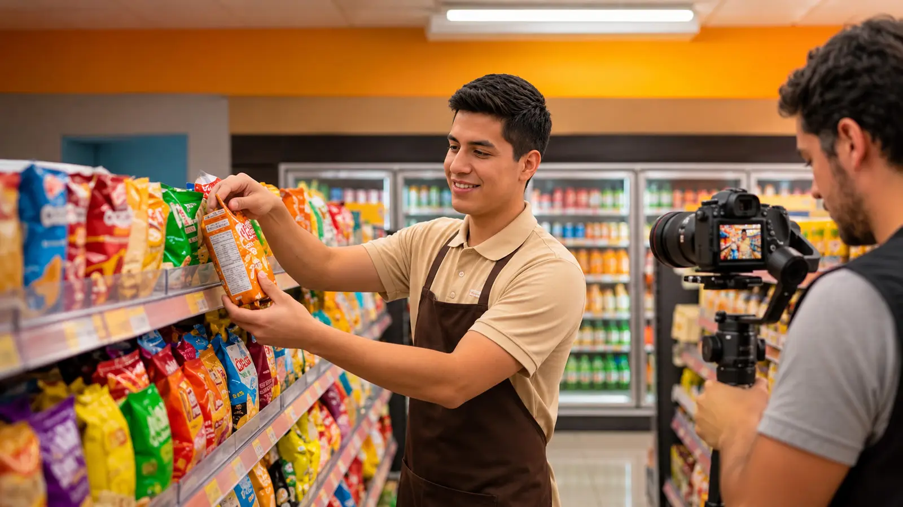

AcademiaDigitalOperativa
Microlearning andragógico grabado ‘en el lugar de los hechos’ para retail, tiendas de conveniencia, supermercados, cafeterías, centros logísticos, etc.
- -60%Tiempo de entrenamiento operativo
- 95%Retención visual vs. 10% en manuales PDF
- 0 minDe interrupción en tu tienda, local, planta o almacén
El costo de entrenar con PDFS o videos que pocos entienden
- Tiendas de conveniencia

Errores en góndola
Productos mal ubicados y pérdidas por desconocer la rotación FEFO/FIFO.
- Cafeterías - Alimentos

Mermas en recetas
Fallas en preparación y quiebres de calidad entre el turno o tiendas.
- Retail y supermercados

Colas en caja o atención al cliente
El personal se enfoca en enseñar en lugar de atender.
- Logística y almacenes

Daños y accidentes
Carga frágil destruida y 3x más riesgo laboral por mal uso de maquinaria o equipos.
Cine digital ligero de despliegue rápido
Grabamos con unidades 4K compactas y estabilizadores directamente en tus pasillos, cocinas o almacenes sin bloquear clientes ni detener tu flujo.
Del manual al video en cancha
- 01
Hiper-contextualizado
Tus propias sedes, tus máquinas, tu POS y tus activos reales paso a paso.
- 02
Hiper-personalizado
Estructurado a tu medida con tus procesos, con tus detalles. Tu ecosistema.
- 03
Microlearning adulto
Cápsulas andragógicas de 2 a 10 min: +50% compromiso y +17% conocimiento inmediato.
- 04
Efecto espejo real
El nuevo ingreso aprende viendo a sus propios compañeros operar con éxito.
SLAs desde 5 días. Tiempos personalizados según proceso y/o prioridad.
El Loop Phygital QR en 60 segundos

1. Duda in-situ
En tienda, almacén, planta, cafetería, etc.

2. Sticker QR
Escanea en su estación.

3. Video real
Mira el proceso en móvil.

4. Cero error
Sin llamar al supervisor.

Certificación CE
Respaldo de tus procesos regulados auditables, de alta complejidad o todos los que requieras.
Agenda tu demo
piloto hoy
Retén hasta un 82% más a tu nuevo talento y estandariza tus sucursales en tiempo récord.


Plataforma educativa LMS
Sistema de aprendizaje personalizado para medición y seguimiento. Dashboard a tu medida.